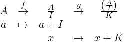
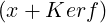
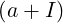
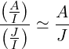
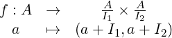
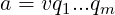
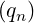
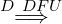

GyA - Teoría 1ª Parte
Jose Antonio Lorencio Abril
2019/2020
1 Anillos
Teorema 1.23. De la Correspondencia
Sea A un anillo, e I un ideal de A. Entonces
Y la siguiente aplicación es biyectiva
-
⊴
Como J ⊴A, entonces 0 ∈J  0 + I ∈
0 + I ∈
Dados x,y ∈J, tenemos que (x + I) + (y + I) = (x + y) + I ∈ , pues x + y ∈J
, pues x + y ∈J
Dado a ∈A, entonces (a + I)(x + I) = ax + I ∈ , pues ax ∈J
, pues ax ∈J
Sea ahora K ⊴ y sea J = , y definimos
y sea J = , y definimos

Y sea h = g ∘f. Calculemos su núcleo:
Además, si a ∈I  a + I = I = 0 ∈K a ∈J. Es decir, I ⊂J.
a + I = I = 0 ∈K a ∈J. Es decir, I ⊂J.
¿ = K?
= K?
’⊆’ x ∈  x = a + I, a ∈J
x = a + I, a ∈J  x = a + I ∈K (por la definición de J)
x = a + I ∈K (por la definición de J)
Recapitulando: dado un ideal de , podemos escribir este como  , donde I ⊂J ⊴A, por lo que
nuestra aplicación es suprayectiva.
, donde I ⊂J ⊴A, por lo que
nuestra aplicación es suprayectiva.
-
Sean J1,J2 ideales de A que contienen a I tales que ⊆. Entonces
Por tanto, si =  J1 = J2
J1 = J2
Y la aplicación es inyectiva.
Es decir, que la aplicación del enunciado es biyectiva. Pero esto quiere demuestra también la
igualdad de los dos conjuntos de ideales.
Teorema 1.27. Primer teorema de isomorfía
Sea f : A →B un homomorfismo de anillos. Entonces existe un único isomorfismo de anillos
f : →Imf que hace conmutativo el diagrama
es decir, i ∘f ∘p = f, donde i es la inclusión y p es la proyección.
La aplicación f : →Imf dada por f(x + Kerf) = f(x) está bien definida. Es decir, no
depende de representantes. Veámoslo:
Si x + Kerf = y + Kerf entonces x -y ∈Kerf y así f(x) -f(y) = f(x -y) = 0  f(x) = f(y).
f(x) = f(y).
Veamos ahora que es homomorfismo:
-
f = f = f(x + y) = f(x) + f(y) =
f + f
-
f = f = f(xy) = f(x)f(y) = ff
-
Queda ver la biyectividad.
Comenzamos por la supreyectividad:
Dado x ∈Imf  ∃a ∈A∕x = f(a) = f
∃a ∈A∕x = f(a) = f
Para ver que es inyectiva usamos la Proposición 1.21 (un homomorfismo de anillos es inyectivo sii
Kerf = 0):
Así, f es un isomorfismo y los conjuntos , Imf son isomorfos.
¿Hace conmutativo el diagrama?
Dado x ∈Kerf, se tiene que
Supongamos que otro homomorfismo g : →Imf verifica i ∘g ∘p = f, entonces ∀x ∈Kerf, se
tiene g(x + Kerf) = i = f(x) = f, y así g = f.
Teorema 1.28. Segundo Teorema de Isomorfía
Sea A un anillo y sean I,J dos ideales tales que I ⊂J. Entonces ⊴ y existe un isomorfismo de
anillos
y existe un isomorfismo de
anillos
Por el teorema de correspondencia,  ⊴
⊴ .
.
Sea f : → la aplicación definida por f(a + I) = a + J.
-
f = f = (a + b) + J = (a + J) + (b + J) = f + f
-
f = f = ab + J = (a + J)(b + J) = ff
= f = ab + J = (a + J)(b + J) = ff
-
Núcleo: f(a + I) = 0 = 0 + J ⇐⇒a + J = 0 + J ⇐⇒a ∈J. Es decir, Kerf =  .
.
Por el primer teorema de isomorfía, tenemos que

Teorema 1.29. Tercer Teorema de Isomorfía
Sea A un anillo con un subanillo B y un ideal I. Entonces:
-
-
B + I es un subanillo de A que contiene a I como ideal
-
Se tiene un isomorfismo de anillos ≃
-
No vacío: como B es subanillo de A, entonces 0 ∈B. Como I ⊴A, entonces 0 ∈I. Así,
0 ∈B ∩I  B ∩I≠∅
B ∩I≠∅
Suma: dados x,y ∈B ∩I 
 x + y ∈B ∩I
x + y ∈B ∩I
Producto: dados x ∈B ∩I, b ∈B 
 xb ∈B ∩I
xb ∈B ∩I
-
Por la proposición 1.7, para ver que B + I es subanillo de A, basta ver que contiene al 1 y es cerrado
para restas y productos
Contiene al 1: Como B es subanillo, entonces 1 ∈B  1 = 1 + 0 ∈B + I
1 = 1 + 0 ∈B + I
Cerrado para restas: Sean
x,y ∈B +I  x = x1 +x2, y = y1 +y2, x1,y1 ∈B, x2,y2 ∈I
x = x1 +x2, y = y1 +y2, x1,y1 ∈B, x2,y2 ∈I  x-y = (x1 -y1)+(x2 -y2).
x-y = (x1 -y1)+(x2 -y2).
Pero B es cerrado para restas, por lo que x1 -y1 ∈B, y también
y2 ∈I  -y2 ∈I
-y2 ∈I  x2 -y2 ∈I. Por tanto x -y ∈B + I
x2 -y2 ∈I. Por tanto x -y ∈B + I
Cerrado para productos: Sean x,y ∈B + I  xy = (x1 + x2)(y1 + y2) = x1y1 + x1y2 + x2y1 + x2y2
xy = (x1 + x2)(y1 + y2) = x1y1 + x1y2 + x2y1 + x2y2
Como B es cerrado para productos, entonces x1y1 ∈B.
Como I es un ideal en A, entonces x1y2,x2y1,x2y2 ∈I  x1y2 + x2y1 + x2y2 ∈I
x1y2 + x2y1 + x2y2 ∈I
Por tanto, xy ∈B + I, y así, este es subanillo de A.
Además, contiene a I pues dado x ∈I  x = 0 + x ∈B + I
x = 0 + x ∈B + I
-
Sea f : B → la composición de la inclusión j : B →A con la proyección p : A →
la composición de la inclusión j : B →A con la proyección p : A → .
.
Pero x ∈B, por tanto Kerf = B ∩I.
Es decir, Imf =  , pero
, pero  = :
= :
’⊆’ x + I ∈  x + I = (x + 0) + I ∈
x + I = (x + 0) + I ∈
’⊇’ (x + y) + I ∈  (x + y) + I = (x + I) + (y + I) = x + I ∈
(x + y) + I = (x + I) + (y + I) = x + I ∈
Así, por el primer teorema de isomorfía:
Teorema 1.33. Teorema Chino de los Restos para anillos
Sea A un anillo y sea I1,...,In ideales de A tales que Ii + Ij = A para todo i≠j.
Entonces I1 ∩... ∩In = I1...In. Además
Razonamos por inducción sobre n, empezando por caso n = 2, pues el caso n = 1 es trivial.
’⊆’ La hipótesis I1 + I2 = A = (1) nos dice que existen x1 ∈I1,x2 ∈I2∕x1 + x2 = 1, entonces
∀a ∈I1 ∩I2 se tiene a = ax1 + ax2 ∈I1I2, por lo que I1 ∩I2 ⊆I1I2
Veamos la isomorfía: sea

-
f(a + b) = ((a + b) + I1,(a + b) + I2) = ((a + I1) + (b + I1),(a + I2) + (b + I2)) =
(a + I1,a + I2) + (b + I1,b + I2) = f(a) + f(b)
-
f(ab) = (ab+I1,ab+I2) = ((a+I1)(b+I1),(a+I2)(b+I2)) = (a+I1,a+I2)(b+I1,b+I2) = f(a)f(b)
-
f(1) = (1 + I1,1 + Ij), que es la unidad en ×
La imagen, es todo  ×
× , pues f es suprayectiva.
, pues f es suprayectiva.
Dado (a + I1,b + I2) ∈ ×, entonces c = ax2 + bx1, x1,x2 los de más atrás, entonces
f(c) = (ax2 + bx1 + I1,ax2 + bx1 + I2) = (ax2 + I1,bx1 + I2) = ((a + I1)(x2 + I),(b + I2)(x1 + I2)) =
(a + I1,b + I2).
Entonces, por el primer teorema de isomorfía, tenemos que
Pasemos al caso general, n > 2.
Nótese que si demostramos que (I1 ∩... ∩In-1) + In = A ya lo tenemos, pues, por la hipótesis de
inducción
Para ver lo que necesitemos, nótese que ∀i ≤n - 1, ∃ai ∈Ii, bi ∈In∕1 = ai + bi, entonces,
multiplicando todas esas expresiones, obtenemos
donde b engloba a todos los sumandos que se obtendrían desarrollando los productos, excepto el que
hemos dejado fuera, y está en In porque en cada sumando hay al menos un bi, de In. Como, además,
a1 ⋅... ⋅an-1 ∈I1 ∩... ∩In-1, entonces 1 ∈ (I1 ∩... ∩In-1) + In, por lo que (I1 ∩... ∩In-1) + In = A,
como queríamos ver.
2 Divisibilidad en Dominios
Caracterización de DFU
Lema 2.21
Si D es un DFU, entonces todo elemento irreducible de D es primo.
Sea p ∈D irreducible, y sean a,b ∈D tales que p|ab. ¿p|a ó p|b?
Si alguno de los dos es 0 es claro que sí. Supongamos que ninguno es nulo.
Entonces ab = tp para algún t ∈D. Si

son factorizaciones en irreducibles, con u,v,w ∈D*, entonces
y por la unicidad de la factorización, p es asociado de algún qi y entonces p|a o de algún ri y
entonces p|b.
Proposición 2.22
Para un dominio D, las condiciones siguientes son equivalentes:
-
-
Todo elemento no nulo de D es producto de primos
-
D es un DF en el que todo irreducible es primo
’1  2’ D DFU
2’ D DFU  todo elemento no nulo de D es producto de irreduciblestodo
elemento no nulo de D es producto de primos
todo elemento no nulo de D es producto de irreduciblestodo
elemento no nulo de D es producto de primos
’2  3’ En un dominio todo primo es irreducible (proposición 2.13), por lo que si todo no nulo de
D es producto de primos entonces todo no nulo es producto de irreducibles y, por tanto, D es un DF..
3’ En un dominio todo primo es irreducible (proposición 2.13), por lo que si todo no nulo de
D es producto de primos entonces todo no nulo es producto de irreducibles y, por tanto, D es un DF..
Supongamos ahora que p es irreducible y sea p = q1...qk con q1,...,qk primos.
Como p es irreducible, entonces algún qi debe ser asociado de p, podemos suponer que es q1. Así,
p|q1 y q1|p. Entonces, como q1 es primo, también lo es p.
’3  1’ Por hipótesis, todo elemento no nulo de D se factoriza como un producto de primos. Solo
falta ver la unicidad de las factorizaciones.
1’ Por hipótesis, todo elemento no nulo de D se factoriza como un producto de primos. Solo
falta ver la unicidad de las factorizaciones.
Sean up1...pn = vq1...qm, con pi,qi irreducibles ∀i, u,v ∈D*. Suponemos que n ≤m y razonamos
por inducción sobre n.
Si n = 0, entonces m = 0, ya que los divisores de las unidades son unidades.
Supongamos n > 0 y la hipótesis de inducción. Tenemos entonces que pn es primo, por hipótesis, por
lo que divide a algún qi y de hecho son asociados (porque pn también es irreducible). Reordenando si
es necesario, podemos suponer i = m.
Es decir, ∃w ∈D*∕qm = wpn. Entonces
Por la hipótesis de inducción se tiene n - 1 = m - 1  n = m y existe una biyección
n = m y existe una biyección
tal que pi y qτ(i) son asociados ∀i = 1,...,n - 1.
La extensión de τ a una permutación σ de ℕn tal que pi y qσ(i) son asociados ∀i es la evidente:
Y así, obtenemos que las factorizaciones iniciales son equivalentes.
DIP implica DFU
Proposición 2.24
Si D es un DIP y 0≠a ∈D \D*, las siguientes condiciones son equivalentes:
-
-
-
-
-
-
’1 ⇐⇒ 2’ Por la proposición 2.15.(6)
-
a irreducible si y solo si (a) es maximal entre los ideales principales propios no nulos de D
’  ’ a irreducible si, y solo si, a = bc
’ a irreducible si, y solo si, a = bc  b ∈A* ó c ∈A*. Entonces, supongamos que
(a) ⊂ (b) ⇐⇒a ∈ (b) ⇐⇒a = bc.
b ∈A* ó c ∈A*. Entonces, supongamos que
(a) ⊂ (b) ⇐⇒a ∈ (b) ⇐⇒a = bc.
Entonces, o bien (b) = A, o bien b es asociado de a, lo que implica a|b, y entonces b ∈ (a), por lo que
(b) ⊂ (a), y así (a) = (b). Es decir, si a es irreducible, no puede haber ningún ideal principal que
contenga propiamente al ideal que genera.
’ ⇐= ’ No existe ningún 0≠b ∈A \A*∕(a) ⊊ (b), entonces, si a = bc, se tiene que

’2 ⇐⇒ 3’ Por la proposición 2.6.(1)
-
I es maximal si y solo si  es un cuerpo
es un cuerpo
 es un cuerpo si, y solo si, sus únicos ideales son el 0 y el total.
es un cuerpo si, y solo si, sus únicos ideales son el 0 y el total.
I es maximal si, y solo si, no existe ningún ideal propio que lo contenga.
’ ⇐= ’ Si es un cuerpo, entonces los únicos ideales son el 0 y el total. La biyección del teorema de
correspondencia nos da los ideales de A que contienen a I como π-1(J), J ideal de . Pero
π-1(0) = 0, π-1( ) = A. Por lo que I es maximal.
) = A. Por lo que I es maximal.
’4 ⇐⇒ 5’ Por la proposición 2.15.(5)
-
a primo si y solo si (a) es un ideal primo no nulo de D
a primo ⇐⇒ ⇐⇒ ⇐⇒ (a) primo
’5 ⇐⇒ 6’ Por la proposición 2.6.(2)
-
I es primo si y solo si  es un dominio
es un dominio
’2  5’ Por la proposición 2.6.(3)
5’ Por la proposición 2.6.(3)
-
Si I es maximal entonces es primo
’4  1’ Por la proposición 2.13
1’ Por la proposición 2.13
-
En un dominio todo elemento primo es irreducible
Si a = bc, entonces b|a y c|a. Como a|a  a|bca|b ó a|c.
a|bca|b ó a|c.
-
Si a|b, entonces a,b son asociados
-
Si a|c, entonces a,c son asociados
Por lo que a es irreducible.
Teorema 2.25
Si demostramos que D es un DF, entonces, por la proposición 2.24, al ser D un DIP, tenemos que
todo irreducible es primo. Entonces D es un DF con todo irreducible primo, por la proposición
2.22.(3  1), tenemos el resultado.
1), tenemos el resultado.
Es decir, basta ver que D es DF.
Por reducción al absurdo, supongamos que D no es DF.
Vamos a construir, por recurrencia, una sucesión a1,a2,... de elementos de D que no admiten
factorización y tales que (a1) ⊂ (a2) ⊂... es una cadena estrictamente creciente de ideales de D.
Así, sea a1 ∈D un elemento que no admite factorización en irreducibles, que existe pues suponemos
que D no es DF.
Supongamos, entonces, que hemos seleccionado a1,...,an, n ≥ 1, satisfaciendo las condiciones
anteriores. Entonces an no es irreducible (pues en tal caso sería producto de irreducibles), luego
existen x,y ∈D \D*∕an = xy.
Como an no es producto de irreducibles, al menos uno de los factores x,y no es producto de
irreducibles. Supongamos que es x.
Entonces, haciendo an+1 = x, tenemos que an+1|an  (an) ⊂ (an+1) y la inclusión es estricta,
pues y ∈D \D*, no es unidad.
(an) ⊂ (an+1) y la inclusión es estricta,
pues y ∈D \D*, no es unidad.
Una vez construida la sucesión, tomamos
Esta igualdad se debe a que (ai) ⊂ (ai+1), luego (a1,...,ak) = (ak) = ∪i=1k(ai). Tomando límites la
tenemos.
Como D es DIP, ∃x ∈D∕I = (x). En particular, x ∈I, por tanto, existe un índice, i, tal que
x ∈ (ai) (y de hecho pertenece a todos los posteriores también). Además, dado que
(ai) ⊂I = (x)  ai ∈ (x). O sea, que x y ai son asociados. Pero esto quiere decir que (ai) = (x), y
por lo tanto (ai) = (ai+1)# Esto es una contradicción, ya que los hemos construido de forma que
estuvieran estrictamente contenidos. Por tanto, D debe ser un DF y, como explicamos al principio, es
un DFU.
ai ∈ (x). O sea, que x y ai son asociados. Pero esto quiere decir que (ai) = (x), y
por lo tanto (ai) = (ai+1)# Esto es una contradicción, ya que los hemos construido de forma que
estuvieran estrictamente contenidos. Por tanto, D debe ser un DF y, como explicamos al principio, es
un DFU.
DE implica DIP
Lema 2.28
Sea δ una función euclídea en D, sea I un ideal de D y 0≠a ∈D, a ∈I. Entonces
I = (a) ⇐⇒δ(a) ≤δ(x), ∀x ∈I.
’  ’ I = (a)
’ I = (a)  ∀x ∈I, a|xδ(a) ≤δ(x)
∀x ∈I, a|xδ(a) ≤δ(x)
’ ⇐= ’ Como a ∈I  (a) ⊂I.
(a) ⊂I.
Sea x ∈I, por DE2 se tiene que ∃q,r ∈D∕x = aq + r y o bien r = 0 o bien δ(r) < δ(a).
Entonces r = x -aq ∈I, y entonces δ(a) ≤δ(r). Por tanto, ha de ser r = 0. Es decir,
x = aq  x ∈ (a). Así, I ⊂ (a).
x ∈ (a). Así, I ⊂ (a).
Teorema 2.29
Todo dominio euclídeo es DIP.
Sea D un DE, δ un función euclídea en D y sea I ⊲ D. ¿Existe 0≠a ∈I tal que δ(a) ≤δ(x), ∀x ∈I?
Sea a∕δ(a) = min, nótese que esto es posible porque δ está acotada inferiormente
por 0 y toma valores discretos. Como a ∈I  (a) ⊂I.
(a) ⊂I.
Ahora bien, si y ∈I, entonces ∃q,r ∈D∕y = qa + r, con r = 0 o δ(r) < δ(a).
Entonces r = y -qx ∈I, por tanto, como a presenta el mínimo de los δ, ha de ser r = 0. Es decir,
y = qx  y ∈ (x).
y ∈ (x).
Así, I ⊂ (a) y tenemos las dos inclusiones.
Propiedad universal del cuerpo de fracciones
Proposición 2.34
Sean D un dominio, Q(D) su cuerpo de fracciones y u : D →Q(D) la aplicación dada por u(a) = .
Entonces:
-
Propiedad universal del cuerpo de fracciones: Para toda pareja (K,f) formada por un cuerpo
K y un homomorfismo inyectivo de anillos f : D →K, existe un único homomorfismo de cuerpos
f : Q(D) →K tal que f ∘u = f. Se dice que f completa de modo único el diagrama
-
Si dos homomorfismos de cuerpos g,h : Q(D) →K coinciden sobre D entonces son iguales. Es decir,
si g ∘u = h ∘u entonces g = h
-
Q(D) está determinado salvo isomorfismos por la propiedad universal. Explícitamente: supongamos
que existen un cuerpo F y un homomorfismo inyectivo de anillos v : D →F tales que, para todo
cuerpo K y todo homomorfismo inyectivo de anillos f : D →K, existe un único homomorfismo de
cuerpos f : F →K tal que f∘v = f. Entonces existe un isomorfismo ϕ : F →Q(D) tal que ϕ∘v = u.
1) Sea f como en el enunciado. Si f : Q(D) →K es un homomorfismo de cuerpos tal que f ∘u = f,
entonces, ∀ ∈Q(D), se verifica
Esto prueba que el único homomorfismo de cuerpos f que puede satisfacer f ∘u = f tiene que venir
dado por f = f(a)f(s)-1.
Solo falta comprobar que la aplicación f así dada está bien definida y es un homomorfismo.
Si = entonces a1s2 = a2s1, luego f(a1)f(s2) = f(a2)f(s1) ⇐⇒f(a1)f(s1)-1 = f(a2)f(s2)-1.
Luego f está bien definida.
Veamos que es un homomorfismo:
-
f = f = f(a1s2 + a2s1)f(s1s2)-1 = f(s1)-1f(s2)-1 =
f(a1)f(s2)f(s1)-1f(s2)-1 + f(a2)f(s1)f(s1)-1f(s2)-1 = f(a1)f(s1)-1 + f(a2)f(s2)-1 =
f + f
-
f = f(a1a2)f(s1s2)-1 = f(a1)f(a2)f(s1)-1f(s2)-1 = ff
-
f(1) = f = f(1)f(1)-1 = 1 ⋅ 1-1 = 1 ⋅ 1 = 1
2) Si ponemos f = g ∘u = h ∘u : D →K, los homomorfismos g,h completan el diagrama de 1) y
por la unicidad se tiene g = h.
3) Aplicando 1) a v del enunciado, encontramos un homomorfismo v : Q(D) →F tal que v ∘u = v,
y aplicando la hipótesis de 3) sobre u, encontramos un homomorfismo u : F →Q(D) tal que
u ∘v = u. Entonces la composición u ∘v : Q(D) →Q(D) verifica (u ∘v) ∘u = u ∘v = u = IdQ(D)u.
Por 2), obtenemos que u ∘v = IdQ(D).
En particular u es suprayectiva, y es inyectiva por ser homomorfismo de cuerpos (el núcleo es un
ideal y los únicos ideales en un cuerpo son el 0 y el total, entonces el núcleo es 0 y es inyectiva), y
entonces ϕ = u es el isomorfismo buscado.
3 Polinomios
Propiedad Universal de Anillo de Polinomios (PUAP)
Proposición 3.3
Sean A un anillo, A[X] el anillo de polinomios con coeficientes en A en la indeterminada X y
u : A →A[X] el homomorfismo de inclusión.
-
PUAP Para todo homomorfismo de anillos f : A →B y todo elemento b ∈B existe un único
homomorfismo de anillos f : A[X] →B tal que f(X) = b y f ∘u = f. Para expresar la última
igualdad se dice que f completa de modo único el diagrama
-
Si dos homomorfismos de anillos g,h : A[X] →B coinciden sobre A y en X entonces son iguales. Es
decir, si g ∘u = h ∘u y g(X) = h(X) entonces g = h.
-
A[X] y u están determinados salvo isomorfimos por la PUAP.
Explícitamente: supongamos que existen un homomorfismo de anillos v : A →P y un elemento
T ∈P tales que, para todo homomorfismo de anillos f : A →B y todo elemento b ∈B, existe un
único homomorfismo de anillos f : P →B tal que f ∘v = f y f(T) = b. Entonces existe un
isomorfismo ϕ : A[X] →P tal que ϕ ∘u = v y ϕ(X) = T.
1) Sean f : A →B y b ∈B como en el enunciado. Si existe un homomorfismo f : A[X] →B tal que
f ∘u = f y f(X) = b, entonces, para un polinomio P = ∑
n≥0pnXn, se tendrá
Por tanto, la aplicación dada por f = ∑
n≥0f(pn)bn es la única que puede cumplir tales
condiciones.
-
f(P + Q) = ∑
n≥0fbn = ∑
n≥0 = ∑
n≥0fbn + ∑
n≥0fbn =
f(P) + f(Q)
-
f(PQ) = ∑
n≥0fbn = ∑n≥0bn =
∑
n≥0bn = f(P)f(Q)
-
f(1) = f(1)b0 = 1 ⋅ 1 = 1
f(X) = f(0)b0 + f(1)b1 = 0 ⋅ 1 + 1 ⋅b = b
¿f ∘u = f? Es evidente, pues hemos construido f para que verifique esto.
2) Haciendo f = g ∘u = h ∘u : A →B, los homomorfismos g,h completan el diagrama de 1), por la
unicidad se tiene que g = h.
3) Tomemos v : A →P y T ∈P como en el enunciado. Fijémonos en estos diagramas:
Aplicando 1) al primero, obtenemos v : A[X] →P∕v ∘u = v y v(X) = T.
Aplicando las hipótesis de 3) al segundo, obtenemos u : P →A[X]∕u ∘v = u y u(T) = X.
Entonces, la composición, u ∘v : A[X] →A[X] verifica
Luego, por 2) obtenemos que u ∘v = IdA[X].
Análogamente se demuestra que v ∘u = IdP .
Y así, el isomorfismo buscado es ϕ = v.
Relación entre la multiplicidad de una raíz de un polinomio y sus derivadas
Proposición 3.11
Un elemento a ∈A es una raíz múltiple de P ∈A[X] si y solo si P(a) = P′(a) = 0
’ ⇐= ’ Por el teorema de Ruffini, a es una raíz de P si y solo si P(a) = 0.
Si a es raíz simple se tiene P = (X -a)Q para Q ∈A[X] con Q(a)≠0, entonces
y entonces P′(a) = Q(a) + 0 ⋅Q′(a) = Q(a)≠0.
’  ’ Si a es raíz múltiple, entonces P = (X -a)2Q para Q ∈A[X] con Q(a)≠0, entonces
’ Si a es raíz múltiple, entonces P = (X -a)2Q para Q ∈A[X] con Q(a)≠0, entonces
Proposición 3.12
Sea D un dominio de característica 0, y sean P ∈D[X] y a ∈D. Entonces la multiplicidad de a en
P es el menor m ∈ℕ0 tal que P(m)(a)≠0.
Hagamos inducción en la multiplicidad m de a en P.
m = 0 Es evidente, si la multiplicidad es 0, entonces no es raíz, por lo que P(a)≠0
m ≥ 1 Entonces a es raíz de P y por tanto P = (X -a)Q para cierto Q ∈D[X]. Entonces, la
multiplicidad de a en Q es m - 1, y por hipótesis de inducción Q(i)(a) = 0≠Q(m-1)(a), ∀i < m - 1.
Calculemos la derivada n-ésima de P, que es P(n) = nQ(n-1) + (X -a)Q(t), por inducción:
Entonces, obtenemos la hipótesis de inducción, P(n-1) = (n - 1)Q(n-2) + (X -a)Q(n-1)
n ≥ 2 P(n) = ′ = (n - 1)Q(n-1) + Q(n-1) + (X -a)Qn = nQ(n-1) + (X -a)Q(n)✓
Y la multiplicidad es el menor natural m con la derivada m-ésima de P no nula.
D DFU implica D[X] DFU
Lema 3.15
Si a ∈D DFU y f,g,h ∈D[X] verifican af = gh≠0, entonces existen g1,h1 ∈D[X] tales que
Vamos a razonar por inducción en φ(a).
Si φ(a) = 0, podemos tomar g1 = a-1g y h1 = h.
Si φ(a) > 0, existen p,b ∈D tales que a = pb y p es primo (esto es porque en los DFU los
irreducibles son primos).
Entonces p|af = gh en D[X] y, por el Lema 3.14 (si D es DFU, p primo en D sii p primo en D[X]),
entonces p|g ó p|h.
Podemos asumir que p|g en D[X], es decir, ∃g∕g = gp y gr(g) = gr(g).
Cancelando p, tenemos que bf = gh, pero ahora φ(b) = φ(a) - 1 < φ(a), y la hipótesis de inducción
nos dice que existen g1,h1 ∈D[X] tales que f = g1h1, con gr(g1) = gr(g) = gr(g) y gr(h1) = gr(h).
Y ya tenemos el resultado.
Lema 3.16
Si f ∈D[X] \D es irreducible en D[X] siendo D DFU, entonces es irreducible (y primo) en K[X].
Supongamos que f no es irreducible en K[X].
Por la proposición 3.13 (f irred en Q[X], Q cuerpo si y solo si es primo si y solo si gr(f) > 0 y f no
es producto de dos polinomios de grado menor), entonces, como no es irreducible, deben existir
G,H ∈K[X] tales que
Si 0≠b ∈D es un múltiplo común de los denoinadores de los coeficientes de G, entonces
g = bG ∈D[X], y análogamente existe 0≠c ∈D tal que h = cH ∈D[X].
Aplicando el lema anterior a la igualdad
obtenemos g1,h1 ∈D[X] tales que
por lo que f no es irreducible en D[X]. Por tanto, el resultado queda demostrado por
contrarrecíproco.
Teorema 3.17
D es DFU si y solo si lo es D[X]
’ ⇐= ’ El corolario 3.2 nos dice que D[X] dominio sii D dominio y en este caso D[X]* = D*.
Entonces D es un dominio y cada 0≠a ∈D \D* es producto de irreducibles de D[X], que tendrán
grado 0 pues lo tiene a. Por el lema 3.14 (p irred en D sii p irred en D[X]), tenemos que esa misma
factorización de D[X] es una factorización en D por irreducibles. Como D[X] es DFU, entonces los
irreducibles son primos. Y el mismo lema 3.14 nos dice que los primos de D[X] son los primos de D,
por lo que, usando la caracterización de DFU, tenemos que, como D es DF y los irreducibles son
primos, entonces D es DFU.
’  ’ Vamos a empezar viendo que cada a = a0 + ... + anXn ∈D[X], no invertible y con an≠0, es
producto de irreducibles. Lo haremos por inducción en n + φ(an).
’ Vamos a empezar viendo que cada a = a0 + ... + anXn ∈D[X], no invertible y con an≠0, es
producto de irreducibles. Lo haremos por inducción en n + φ(an).
Obsérvese que a es invertible si, y solo si, a ∈D*, si, y solo si, n + φ(an) = 0.
-
n = 1,φ(an) = 0, y en este caso gr(f) = 1 y a1 es invertible. Si no fuera producto de irreducibles,
entonces debe poder escribirse como a = gh, con g,h ∈D[X] \D[X]* y alguno de ellos no es
producto de irreducibles. Uno debe ser de grado 0 y otro de grado 1, supongamos
gr(g) = 1,gr(h) = 0. Entonces
De donde a0 = b0c0 y a1 = b1c0. Como a1 ∈D* b1c0 ∈D*
b1c0 ∈D* c0 ∈D* = D[X]*. Luego d es
invertible. # Esto contradice que a no sea producto de irreducibles.
c0 ∈D* = D[X]*. Luego d es
invertible. # Esto contradice que a no sea producto de irreducibles.
-
n = 0,φ(an) = 1 Entonces estamos en D y como D es DFU, entonces a es producto de irreducibles.
n + φ(an) > 1 Supongamos que a no es irreducible. Entonces existen
en D[X] \D[X]*, con a = bc.
En consecuencia, podemos aplicar la hipótesis de inducción a b y c y pegando las factorizaciones
obtenemos una factorización de a.
Así, sabemos que D[X] es DF, si demostramos que en D[X] todo irreducible es primo, entonces
podremos asegurar, por la caracterización de DFU, que D[X] es DFU.
Vamos a ver que todo f irreducible en D[X] es primo en D[X]. El lema 3.14 nos dice que si D es
DFU, entonces p irred en D sii p primo en D sii p primo en D[X]. Por tanto, podemos suponer que
gr(f) ≥ 1, pues el otro caso ya lo tenemos.
Sean entonces g,h ∈D[X] tales que f|gh en D[X] ¿f|g ó f|h?
Se tiene que f|gh en K[X] y por el lema 3.16 f es primo en K[X] y entonces f|g ó f|h en K[X].
Podemos suponer que divide a g. O sea, ∃G ∈K[X] tal que g = fG, si demostramos que G ∈D[X]
habremos acabado.
Para esto, sea a ∈D∕aG ∈D[X] y φ(a) mínimo.
Basta ver que φ(a) = 0. Supongamos que no es así, es decir, φ(a) > 0 y sean p,b ∈D con a = pb
con p primo. Entonces, en D[X] se tiene que p|ag = faG. Como p es primo en D[X] (Lema 3.14) y
p ∤ f (porque f es irreducible y gr(f) ≥ 1), entonces ha de ser p|aG en D[X].
Si g1 ∈D[X] verifica aG = pg1entonces bG = g1 ∈D[X], y φ(b) < φ(a) # esto contradice la
minimalidad de φ(a). Por tanto, ha de ser φ(a) = 0. Esto implica que G ∈D[X] y que f|g en D[X],
como queríamos ver. Así, f es primo en D[X].
Por tanto, D[X] es un DF en el que todo irreducible es primo, esto quiere decir (caracterización de
DFU) que D[X] es DFU.
Caracterización de los irreducibles del anillo de polinomios de un DFU
Lema 3.14
Sea D un dominio y sea p ∈D
-
p irreducible en D si y solo si lo es en D[X]
-
p primo en D[X] entonces p primo en D
-
Si D es DFU, entonces las siguientes condiciones son equivalentes
-
-
-
-
’  ’ Si no fuese irreducible en D[X], debería ser producto de dos polinomios no invertibles con
grado menor. Pero su grado es 0, luego estos polinomios deberían tener grado 0, por lo que p sería
no irreducible en D#
’ Si no fuese irreducible en D[X], debería ser producto de dos polinomios no invertibles con
grado menor. Pero su grado es 0, luego estos polinomios deberían tener grado 0, por lo que p sería
no irreducible en D#
2) Si p|ab en D, entonces p|ab en D[X], como es primo aquí, entonces p|a o p|b en D[X], pero, como
todos tienen grado 0, esto quiere decir que p|a o p|b en D.
(a) ⇐⇒ (c) Cierto, pues D es DFU, por el lema 2.21
(d)  (b) Cierto, porque primo en un dominio implica irreducible
(b) Cierto, porque primo en un dominio implica irreducible
Demostrando (c)  (d) lo tenemos.
(d) lo tenemos.
polinomios de D[X] tales que p ∤ a,p ∤ b y veamos que p ∤ ab.
Como p no divide a a, existe un menor índice i tal que p ∤ ai y un menor índice j tal que p ∤ bj.
El coeficiente de grado i + j de ab es
Entonces p divide a todos los sumandos excepto al aibj, porque los de la izquierda tienen un índice
en la a menor que i y los de la derecha en la b menor que j. Así, p ∤ ci+j  p ∤ ab.
p ∤ ab.
Por tanto, p es primo en D[X].
Lema 3.19. Lema de Gauss
Si f,g ∈K[X], entonces c(fg) = c(f)c(g). En particular, fg es primitivo si y solo si f y g son
primitivos.
Tenemos f = c(f)f1 y g = c(g)g1 con f1,g1 primitivos.
Luego, para ver la igualdad basta ver que f1g1 es primitivo.
Si no fuera primitivo, entonces c(f1g1) tendría un divisor irreducible p en D. Esto implica que
p|f1g1.
Por el lema 3.14, p es primo en Dp primo en D[X] y por lo tanto p|f1 o p|g1, entonces
p|c(f1) o p|c(g1)# esto contradice que c(f1) = c(g1) = 1.
Así, f1g1es primitivo y el resultado queda demostrado.
Proposición 3.20
Para un polinomio primitivo f ∈D[X] \D, las siguientes condiciones son equivalentes:
-
-
-
f = GH, con G,H ∈K[X]  gr(G) = 0 ó gr(H) = 0
gr(G) = 0 ó gr(H) = 0
-
f = gh, con g,h ∈D[X]  gr(g) = 0 ó gr(h) = 0
gr(g) = 0 ó gr(h) = 0
1  2 Por el lema 3.16
2 Por el lema 3.16
2 ⇐⇒ 3 Por la proposición 3.13, que dice que f irreducible en K[X] sii gr(f) > 0 y no puede
escribirse como producto de polinomios de grado menor
4  1 Como f es primitivo, sus únicos divisores de grado 0 son unidades, por lo que no tiene
divisores de grado 0, ni los tiene de grado mayor por la hipótesis 4. Por tanto, f es irreducible en
D[X]
1 Como f es primitivo, sus únicos divisores de grado 0 son unidades, por lo que no tiene
divisores de grado 0, ni los tiene de grado mayor por la hipótesis 4. Por tanto, f es irreducible en
D[X]
Corolario 3.21
Si D es un DFU y K es su cuerpo de fracciones, entonces los irreducibles de D[X] son los
irreducibles de D y los polinomios primitivos de D[X] \D que son irreducibles en K[X].
Por el lema 3.14 sabemos que los irreducibles de D son irreducibles en D[X].
Si tenemos un polinomio f ∈D[X] \D que no es primitivo, entonces no es irreducible, pues es
divisible por un elemento de D y claramente no son asociados.
Si es primitivo, entonces es irreducible si y solo si lo es en K[X], por el teorema 3.20.

 x = a + I ∈K, a ∈A
x = a + I ∈K, a ∈A  a ∈J
a ∈J  x = a + I ∈
x = a + I ∈


 , entonces
, entonces 


 ’ Por el teorema de la correspondencia, los ideales de
’ Por el teorema de la correspondencia, los ideales de  son los ideales de
son los ideales de  son el total
y el 0 y es un cuerpo.
son el total
y el 0 y es un cuerpo.
 ’ Sean
’ Sean  . Entonces
. Entonces 
 es un dominio.
es un dominio.
 es un dominio, por la proposición 2.3.(3), si
es un dominio, por la proposición 2.3.(3), si  no nulos, entonces
no nulos, entonces


![(u-∘v) ∘u = u-∘v = u = IdA[X]u y (u∘ v)(X ) = u-(T ) = X = IdA [X](X )](teoriaParte1221x.png)